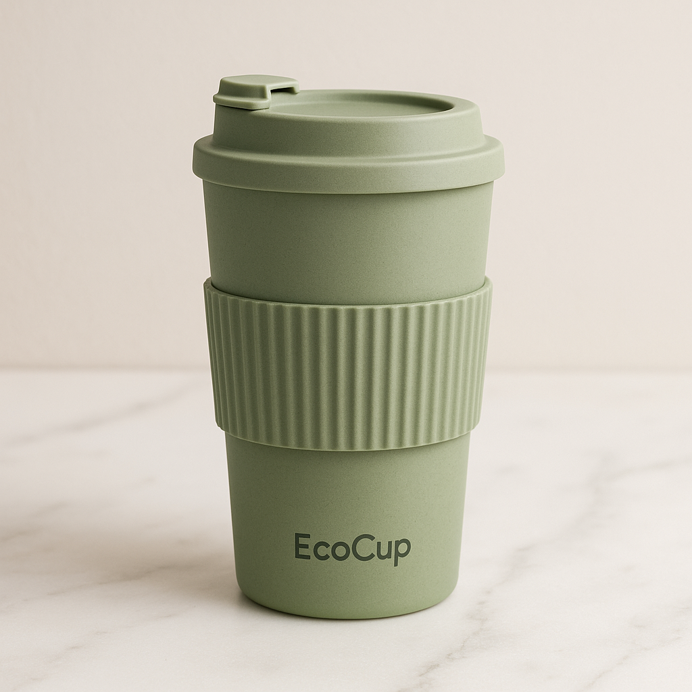
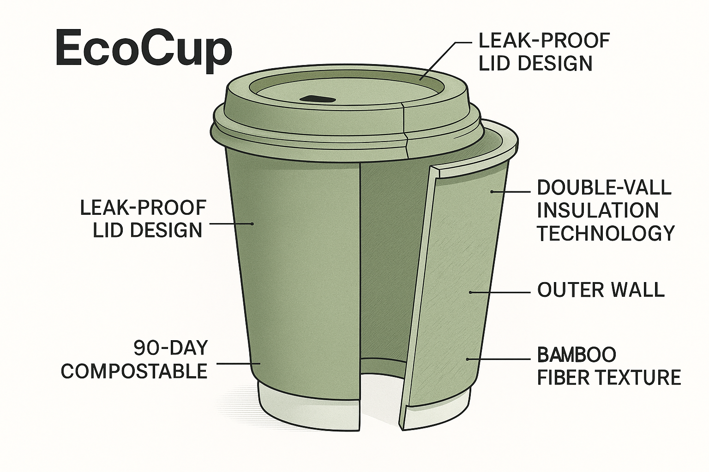
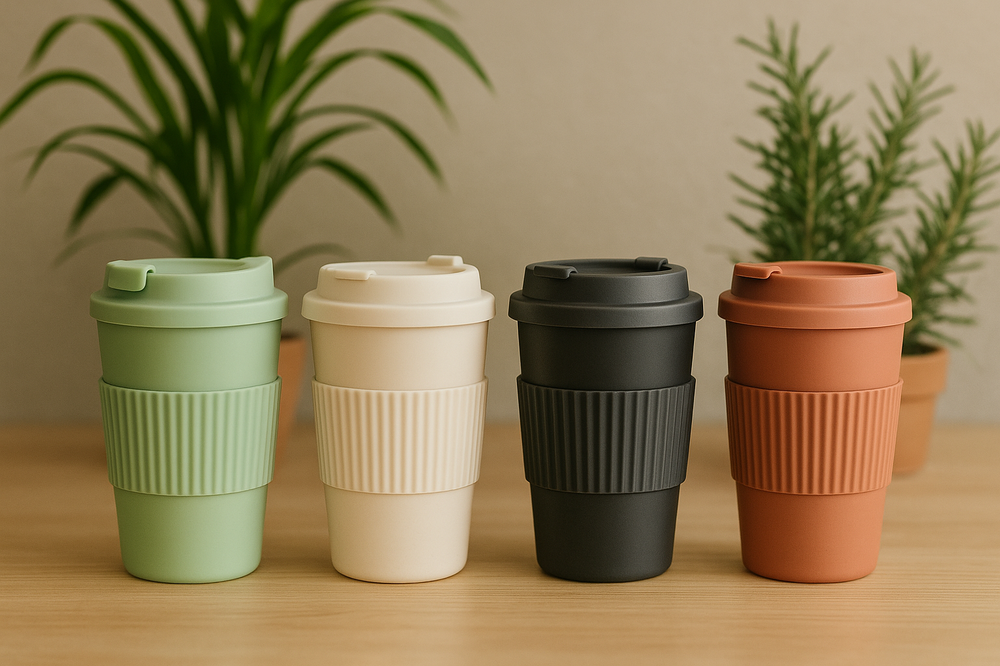
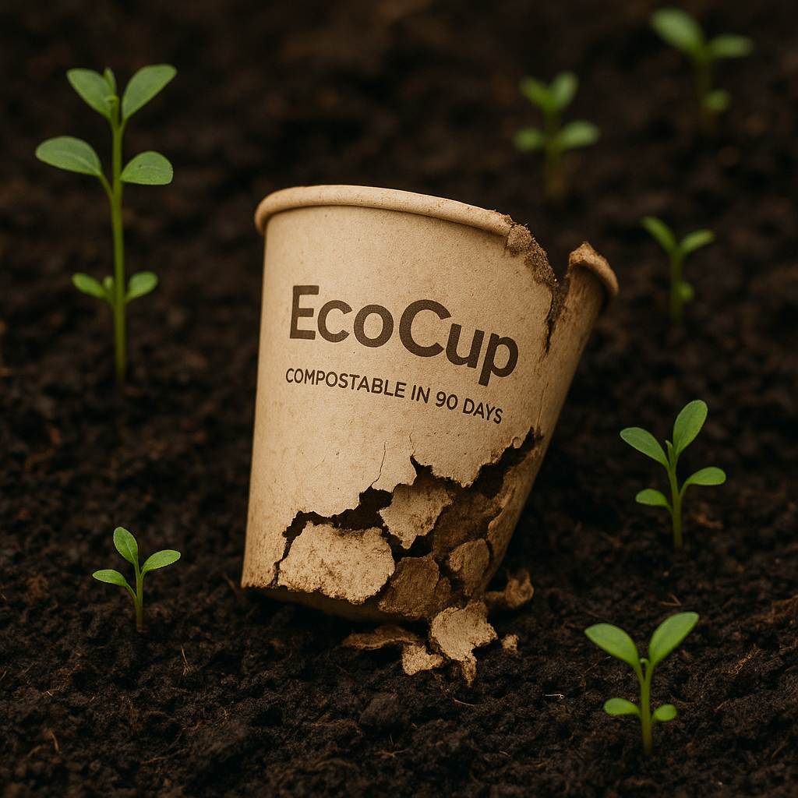

Der erste Coffee-to-go-Becher, der in nur 90 Tagen vollständig kompostiert – ohne Kompromisse bei Geschmack oder Style.
Kostenloser Versand | 30 Tage Geld-zurück-Garantie

Während du deinen Morgenkaffee genießt, türmen sich weltweit Berge von Plastikbechern auf, die erst in 500 Jahren vollständig abgebaut sind. Herkömmliche "Öko"-Alternativen sind oft unpraktisch, sehen langweilig aus oder halten nicht, was sie versprechen.
Es ist Zeit für eine echte Alternative.
Endlich ein Coffee-to-go-Becher, der deine Werte widerspiegelt, ohne dass du Kompromisse eingehen musst. EcoCup vereint revolutionäre Kompostierbarkeit mit skandinavischem Design und überlegener Funktionalität.
Fühle dich gut dabei, wie dein Becher der Erde zurückgegeben wird
Während andere Becher Jahrhunderte brauchen, wird EcoCup in nur 90 Tagen zu nährstoffreicher Erde. Du siehst buchstäblich, wie aus deiner bewussten Entscheidung neues Leben entsteht.
Genieße jeden Schluck, als wäre er frisch gebrüht
Unsere innovative Doppelwand-Technologie hält deinen Kaffee länger heiß als herkömmliche Becher. Perfekt für lange Meetings, Pendlerfahrten oder entspannte Spaziergänge.
Vertraue darauf, dass dein Laptop trocken bleibt
Der intelligente Deckel-Mechanismus verhindert zuverlässig jedes Auslaufen – selbst wenn der Becher umfällt. Für alle, die keine bösen Überraschungen mögen.
Zeige deinen Stil, ohne ein Wort zu sagen
EcoCup sieht nicht nach "Öko-Produkt" aus, sondern nach bewusstem Lifestyle. Das skandinavische Design macht ihn zum perfekten Accessoire für moderne, umweltbewusste Menschen.


Sieh zu, wie dein EcoCup nach 90 Tagen zu nährstoffreicher Erde wird und neues Leben ermöglicht. Das ist echter Umweltschutz – nicht nur ein Versprechen, sondern sichtbare Realität.

"Endlich ein Becher, der genauso gut aussieht wie er sich anfühlt. Meine Kollegen fragen ständig, wo ich ihn her habe!"
"Als Barista sehe ich täglich hunderte Einwegbecher. EcoCup ist der erste wiederverwendbare Becher, den ich wirklich empfehlen kann."
"Ich war skeptisch wegen der Kompostierung, aber nach 3 Monaten in meinem Kompost war wirklich nichts mehr da. Unglaublich!"
Als nachhaltiges Start-up produzieren wir bewusst in kleinen Chargen, um Überproduktion zu vermeiden. Unsere erste Serie ist zu 78% ausverkauft.
Noch 1.100 Becher verfügbar
TÜV-geprüft nach DIN EN 13432
Jede Lieferung kompensiert automatisch ihren CO2-Fußabdruck
Frei von BPA, Phthalaten und anderen Schadstoffen
Verfolge die Herkunft deines Bechers über unsere App
EcoCup besteht aus Bambusfasern und Maisstärke, die von Mikroorganismen vollständig abgebaut werden. In einem normalen Kompost dauert dieser Prozess 90-120 Tage, in industriellen Kompostieranlagen nur 60 Tage.
Ja, EcoCup ist spülmaschinenfest bis 60°C. Für maximale Lebensdauer empfehlen wir jedoch die Handwäsche mit warmem Wasser.
Nein, die natürlichen Materialien sind geschmacksneutral. Viele Kunden berichten sogar, dass ihr Kaffee besser schmeckt, da keine Plastik-Rückstände den Geschmack beeinträchtigen.
Du hast 30 Tage Zeit, deinen EcoCup zurückzusenden und erhältst den vollen Kaufpreis erstattet. Ohne Wenn und Aber.
Jeder große Wandel beginnt mit einer kleinen Entscheidung. Deine Entscheidung für EcoCup ist mehr als nur der Kauf eines Bechers – es ist ein Statement für die Welt, die du dir wünschst.